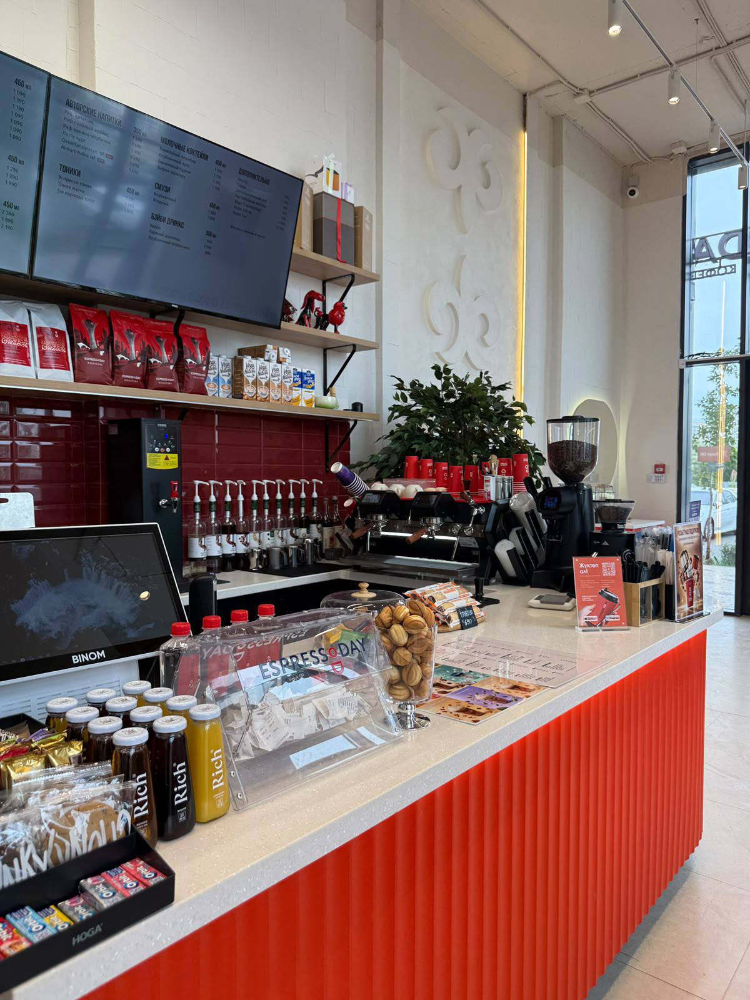

What makes Espresso Day special?
A recognizable red-and-white style, 112 branches across the country, and a varied menu make EspressoDay more than just a place to buy coffee — it's a familiar part of everyday coffee culture.

EspressoDay was born in Astana and has grown into a network of 112 branches across Kazakhstan. It positions itself as a “second home” — a cozy place to relax, study, work, or meet friends, with a menu of coffee, lemonades, snacks, and desserts.Recognizable for its red-and-white style and active social media presence, EspressoDay has become a familiar part of everyday coffee culture in Kazakhstan.
A recognizable red-and-white style, 112 branches across the country, and a varied menu make EspressoDay more than just a place to buy coffee — it's a familiar part of everyday coffee culture.